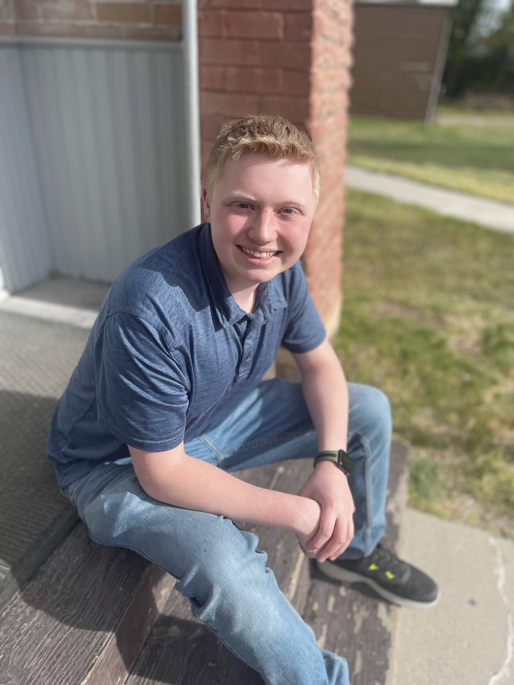

Tyler Kraft | WDD 130
I am a graduate from Mountainland Technical Collage. I have worked in customer service for over three and a half years. I am currently a Tier II Technical Support Specialist for Isolved Talent Aquisition. With my job experience I have used leadership and problem solving skills to help customers and grow my skills. I am currently studying at BYU Idaho to get a Bachelors degree in Computer Science.